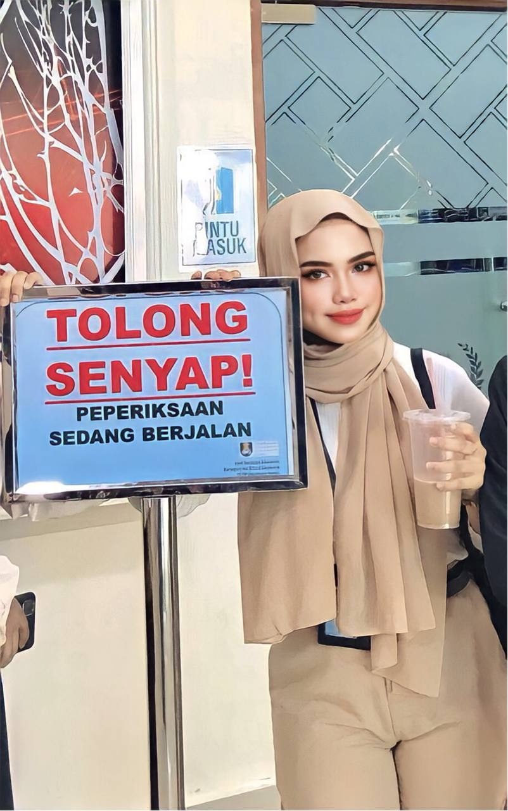
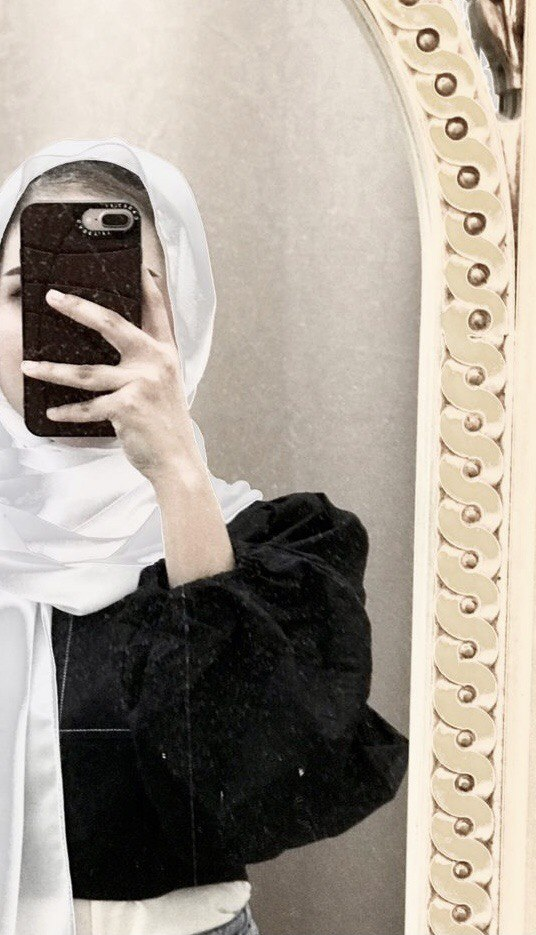
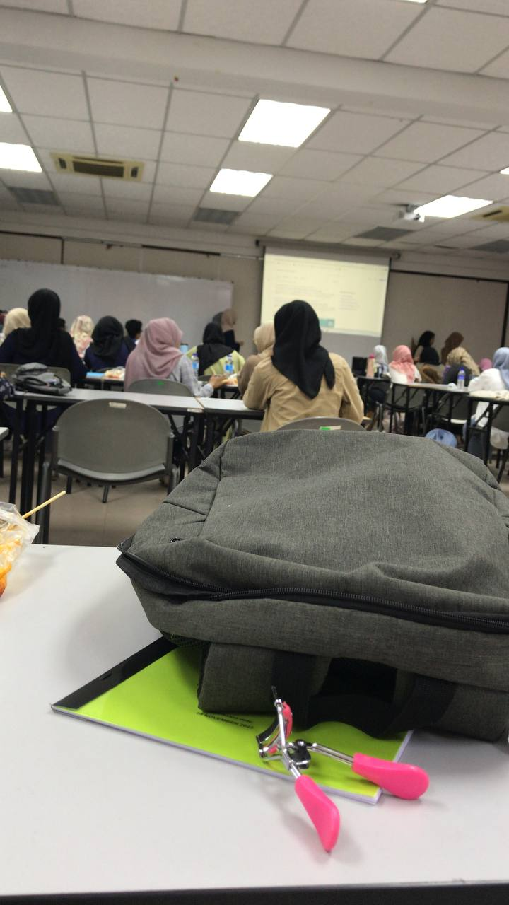
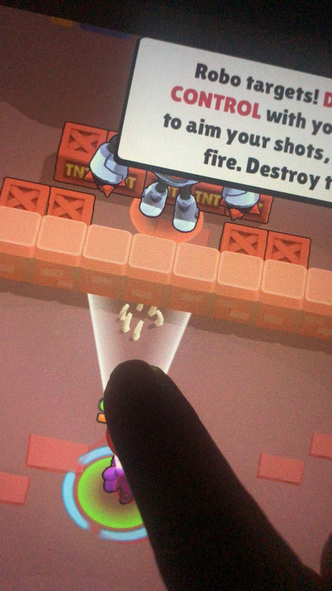

Welcome To My Blog!
|  |
I loves surrounded with people but sometimes, I feel
like i'm not fit with the community. I feel left behind but still i try to catch up with them and try to be close but i know at the end of the day still i'm introvert person. |
 |
Everytime i allowed anyone to make me feel
unworthy, i always reminded myself that i wiped my own tears a billion times before, took care of myself when i didn't feel pretty, i fed myself my favourite foods when my bad days and loved myself when i felt unloved. so wo why would i let anyone who can only make me feel miserable be a part of my life? everytime i got hurt, i ended up choosing myself again. |
|  |
Here's quotes i want share to everyone
“Do one thing every day that scares you.” “Don’t let yesterday take up too much of today.” “Do the best. What you plant now,you will harvest later.” |
 |
The most wonderful moment in a woman's
life is when she realizes she can do whatever she wants, and she not owe anyone an explanation and she doesn't need anyone's permission. |